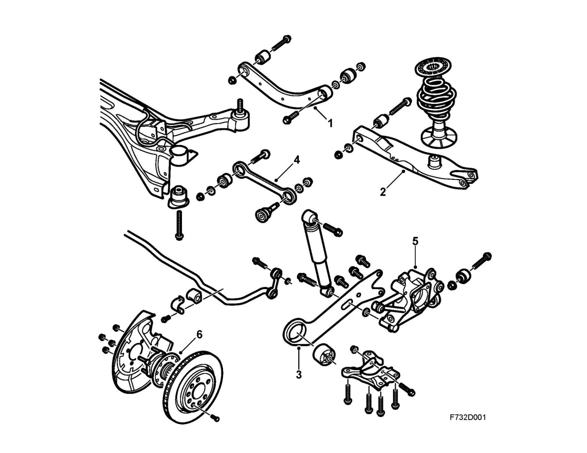
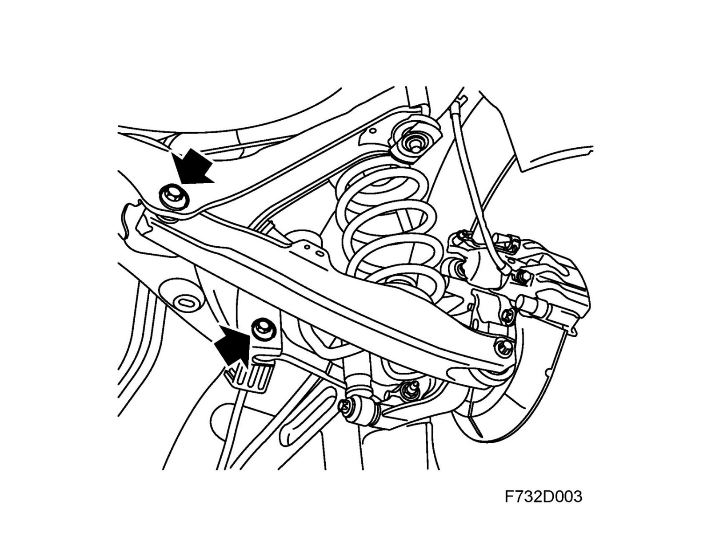

Rear Suspension
Rear suspensionOverview

1. Upper transverse link
2. Lower transverse link
3. Longitudinal link
4. Toe-in link
5. Steering swivel member
6. Wheel hub
Function
The "multi-link" rear suspension comprises a subframe with upper (1) and lower (2) transverse links, one toe-in link (4) and one longitudinal link (3) per wheel. This means that the rear wheels are individually suspended and can move up and down independently.
During oscillation, wheel geometry is altered in a controlled manner. Wheel geometry, or link movement in relation to each other, causes slight oversteering during cornering since the outer rear wheel toe-in approaches 0°. If the front wheels are turned towards the left, the right rear wheel turns towards the right and vice versa.
The steering swivel member (5) is made of cast iron or aluminum for certain models. The lower link arm and toe-in link are made of aluminum. In the steering swivel member, attached by a bolted joint, is the hub integrated with the bearing; this unit also contains the wheel speed sensor. The bearing is a twin-row bearing of the angled contact type.
Toe-in and camber are adjustable by means of off-center bolts in the link arm mountings in the subframe.

The lacquered steel plate subframe connects the transverse links with the body. It is suspended in rubber bushes to exclude noise and vibrations. The spring elements are positioned between the lower transverse link and the body. The springs are of the linear type, that is, that they have the same spring force during their entire range of movement.
The transverse links hold the wheel in place laterally in order to properly guide the wheel suspension movements. They are attached to the subframe by rubber bushes and the lower transverse link is attached by rubber bushes to the steering swivel member. The upper transverse and toe-in link are mounted with ball joints in the steering swivel member. The longitudinal link acts as a mounting for the steering swivel member as well as bears longitudinal load. The longitudinal link is attached to the body by a bracket with rubber bushes which act as insulation against noise and vibration and improve comfort. The steering swivel member is also the lower attachment point for the damper.
An anti-roll bar is mounted between the subframe and longitudinal links.
The dampers are telescopic and double-acting. The shock absorbing medium oil, which counteracts foam build-up, is pressurized with gas during manufacture.
Chassis design is available in Standard and Sport. The Sport chassis, which features harder springs and dampers and a 1 mm thicker anti-roll bar is 10 mm lower than the Standard chassis.